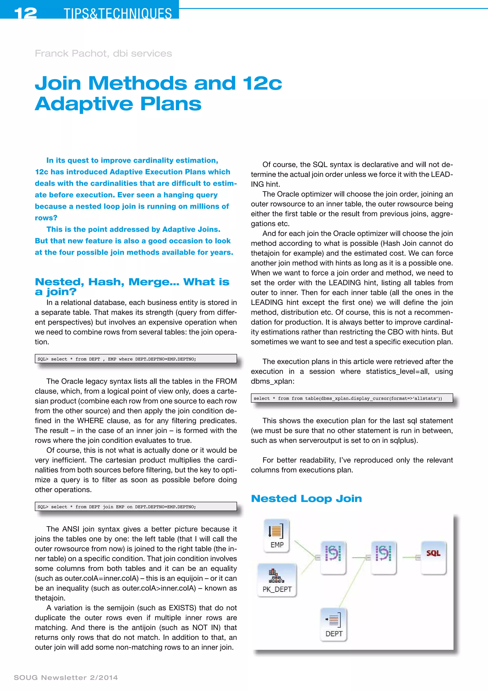
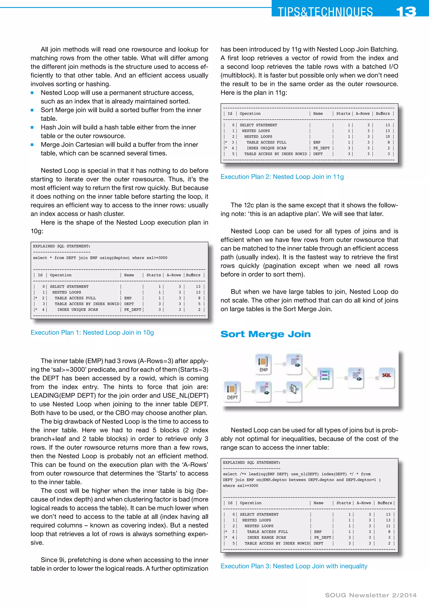
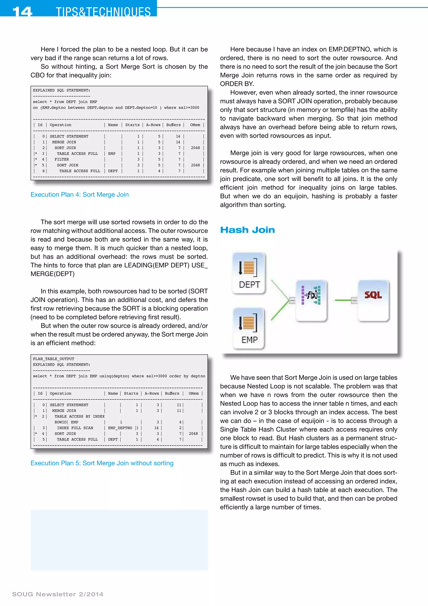
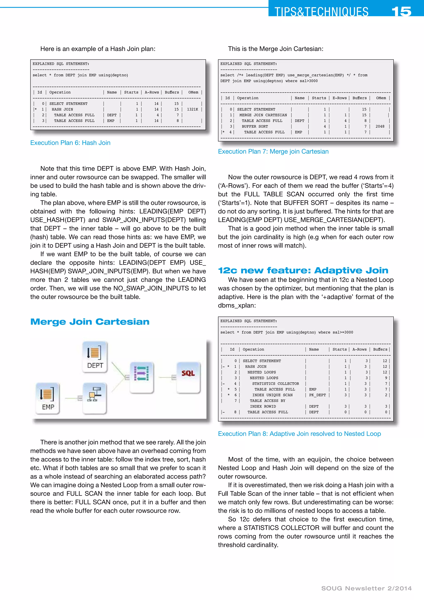
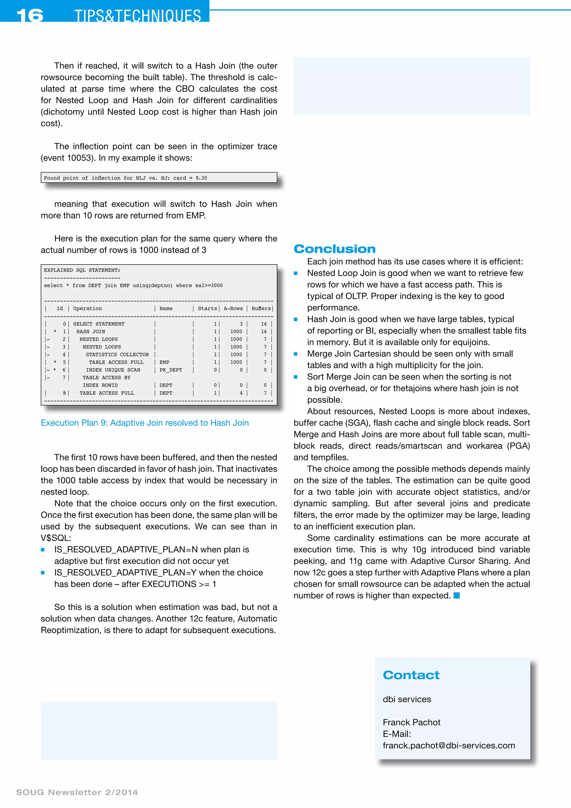

SOUG Newsletter 2/2014 · Franck Pachot
A five-page guide to nested loop, sort merge, hash, and merge Cartesian joins. Worked execution plans show their access patterns and resource tradeoffs before demonstrating how Oracle 12c uses a statistics collector to resolve an adaptive join at first execution.




